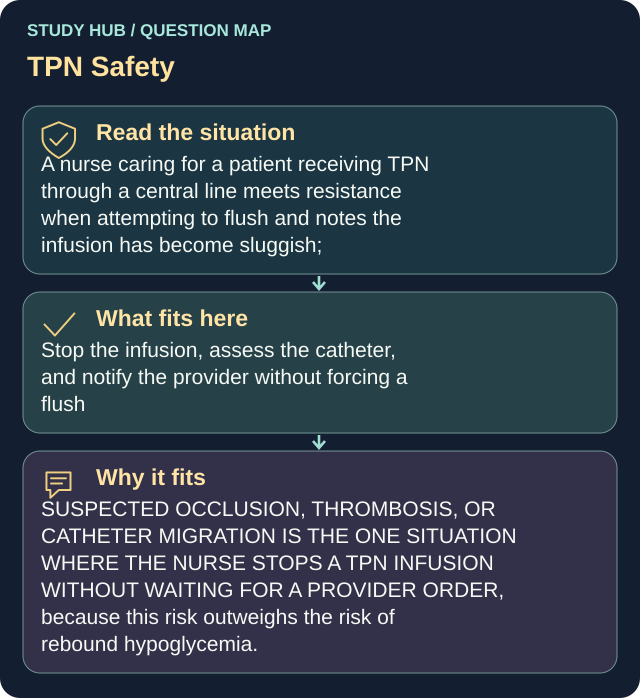

A nurse caring for a patient receiving TPN through a central line meets resistance when attempting to flush and notes the infusion has become sluggish; the external catheter length appears longer than documented. What should the nurse do?
Stop the infusion, assess the catheter, and notify the provider without forcing a flush
SUSPECTED OCCLUSION, THROMBOSIS, OR CATHETER MIGRATION IS THE ONE SITUATION WHERE THE NURSE STOPS A TPN INFUSION WITHOUT WAITING FOR A PROVIDER ORDER, because this risk outweighs the risk of rebound hypoglycemia.
Do NOT force a flush — the central line tip sits at the heart, so popping a clot loose sends it straight there, and forcing air or a displaced catheter risks an air embolism. Continuing or speeding up the infusion into a migrated or occluded line pushes concentrated TPN into the wrong space and delays recognition. Stop the infusion, inspect the catheter, and notify the provider.
Why the other answers do not fit
- Apply firm pressure with a syringe to push the occlusion through and restore flow
- Continue the TPN at the current rate because stopping it causes rebound hypoglycemia
SUSPECTED OCCLUSION, THROMBOSIS, OR CATHETER MIGRATION IS THE ONE SITUATION WHERE THE NURSE STOPS A TPN INFUSION WITHOUT WAITING FOR A PROVIDER ORDER, because this risk outweighs the risk of rebound hypoglycemia.
- Increase the infusion rate to keep the line open until the provider rounds
Continuing or speeding up the infusion into a migrated or occluded line pushes concentrated TPN into the wrong space and delays recognition.
Shared reasoning for choices without a separate note: SUSPECTED OCCLUSION, THROMBOSIS, OR CATHETER MIGRATION IS THE ONE SITUATION WHERE THE NURSE STOPS A TPN INFUSION WITHOUT WAITING FOR A PROVIDER ORDER, because this risk outweighs the risk of rebound hypoglycemia. Do NOT force a flush — the central line tip sits at the heart, so popping a clot loose sends it straight there, and forcing air or a displaced catheter risks an air embolism. Continuing or speeding up the infusion into a migrated or occluded line pushes concentrated TPN into the wrong space and delays recognition. Stop the infusion, inspect the catheter, and notify the provider.



![Endometriosis: tissue outside the uterus. A female pelvic anatomy diagram labels normal endometrium inside the uterine cavity and endometriosis lesions on the outer uterine surface, an ovary, the pelvic lining and the fallopian tube, with an ovarian endometrioma labelled as a chocolate cyst and an adhesion. Symptoms listed: painful periods, chronic pelvic pain, deep pain with sex, bowel and bladder pain especially during periods, fatigue and possible fertility difficulty, and that some people have very few symptoms. Assessment: pain and menstrual history, pelvic examination and imaging such as ultrasound or MRI, normal imaging does not exclude endometriosis, and a clinical diagnosis can guide treatment while laparoscopy may be appropriate in selected cases. Treatment depends on symptoms and fertility goals: pain relief, hormonal suppression, surgery, with supportive symptom tracking and pelvic floor or pain care. Key distinctions: endometriosis occurs outside the uterus, adenomyosis occurs within the uterine muscle, pregnancy and hysterectomy are not guaranteed cures, and pain severity does not reliably match lesion extent. Educational illustration, sources ACOG and WHO](../../img/infographics/endometriosis.webp)